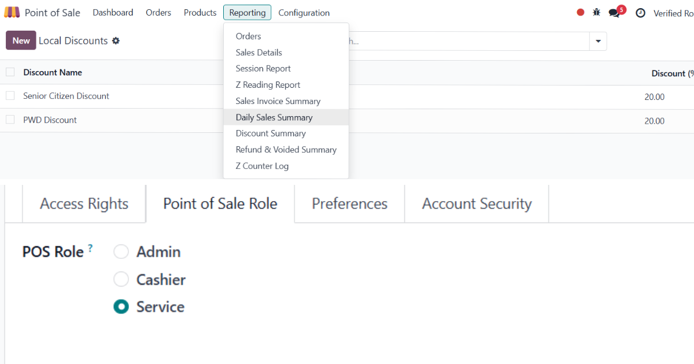

<odoo pos>

Odoo POSBuilt a tailored POS workflow for a restaurant & bar client, adapted to a fast-moving food-service floor.
Key work: role-based access control, table/order management, and order-handling flows suited to bar and kitchen operations.
Tools: Odoo 18 POS, Python, PostgreSQL.